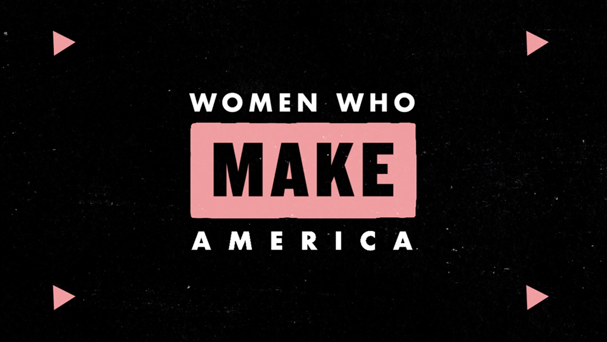
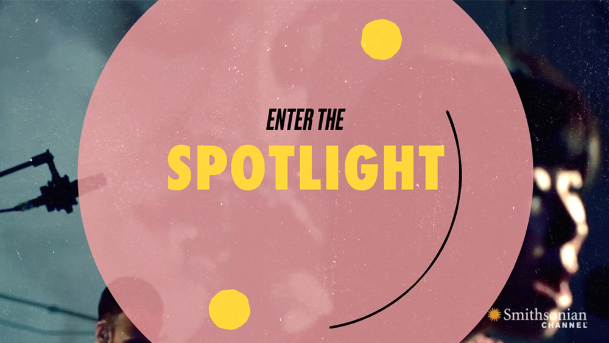
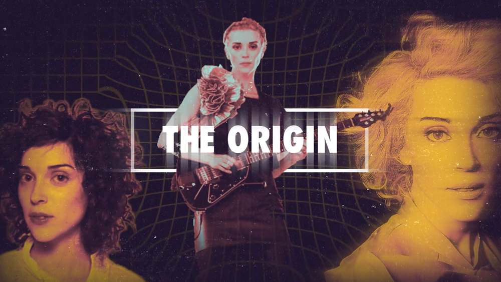
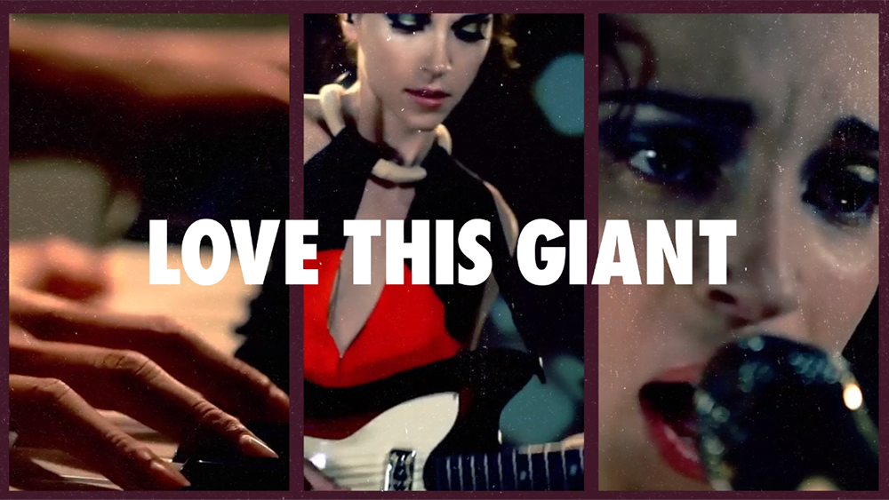

Designing a spirited motion identity for Smithsonian Channel's new punk-feminist webseries
What unites great women in history? When presented with the challenge to unify female American scientists, artists, educators, and leaders, I found a palpable thematic and visual connection in a punk-feminist identity: the universal story of punching above your weight class.
As an exercise in not just motion design, but also editing, I assembled hundreds of clips from concerts and shows for this episode. My goal was to present a clean, thematically consistent array of motion that allowed me to transition smoothly between scenes.
GoalsCreate a compelling and entertaining motion identity that viewers will take keys from within seconds, simultaneously providing visual spectacle as well as a vehicle for narration
Skills Used
Motion Design
Branding
Video Editing
Sketching
Typography
Year Completed2020
for animation highlights!



